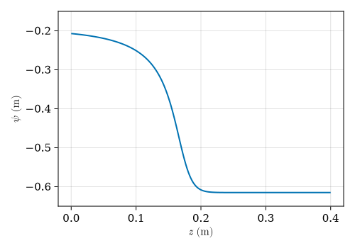
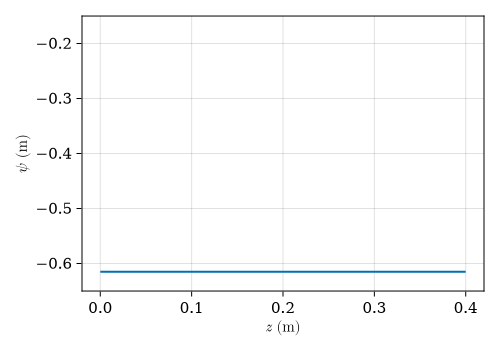

Celia et al. (1990) infiltration problem
This tutorial runs the one-dimensional Richards benchmark from the following paper:
Celia, M. A., Bouloutas, E. T., Zarba, R. L. (1990). A general mass-conservative numerical solution for the unsaturated flow equation. Water Resources Research, 26(7), 1483-1496. DOI: 10.1029/WR026i007p01483
First, we load the required packages.
using HydroTrixi
using SciMLBase
using Trixi
Solve the Richards problem
The setup below follows the elixir_richards_celia_1990.jl example, but we keep a saved time history so the same solution object can drive the animation step later in the tutorial.
asset_dir = docs_generated_dir("celia_1990")"/home/runner/work/HydroTrixi.jl/HydroTrixi.jl/docs/src/assets/generated/celia_1990"1. Load the benchmark definition
HydrologicProblemCelia1990 packages the Richards equation, constitutive relations, boundary data, spatial domain, and time interval for the standard infiltration problem. Depth is measured positive downward from the soil surface.
problem = HydrologicProblemCelia1990()┌──────────────────────────────────────────────────────────────────────────────────────────────────┐
│ HydrologicProblem │
│ ═════════════════ │
│ #spatial dimensions: ……………………………………… 1 │
│ equations: ………………………………………………………………… RichardsEquation1D │
│ initial condition: …………………………………………… initial_condition │
│ boundary conditions: ……………………………………… 2 │
│ │ negative x: ………………………………………………………… BoundaryConditionDirichletPenalty │
│ │ positive x: ………………………………………………………… BoundaryConditionDirichletPenalty │
│ domain: ………………………………………………………………………… ((0.0,), (0.4,)) │
│ time interval: ……………………………………………………… (0.0, 360.0) │
│ source terms: ………………………………………………………… nothing │
│ state to evolved: ……………………………………………… water_content │
│ evolved to state: ……………………………………………… pressure_head_from_water_content │
└──────────────────────────────────────────────────────────────────────────────────────────────────┘2. Build the mesh
The benchmark is one-dimensional, so a TreeMesh with five levels of initial refinement gives 32 cells before time integration begins.
mesh = TreeMesh(problem.domain..., initial_refinement_level = 5)┌──────────────────────────────────────────────────────────────────────────────────────────────────┐
│ TreeMesh{1, Trixi.SerialTree{1, Float64}} │
│ ═════════════════════════════════════════ │
│ center: ………………………………………………………………………… [0.2] │
│ length: ………………………………………………………………………… 0.4 │
│ periodicity: …………………………………………………………… (false,) │
│ current #cells: …………………………………………………… 63 │
│ #leaf-cells: …………………………………………………………… 32 │
│ current capacity: ……………………………………………… 63 │
└──────────────────────────────────────────────────────────────────────────────────────────────────┘3. Set up the spatial discretization
We use a polynomial degree of $N = 3$ together with the mixed implicit Richards semidiscretization SemidiscretizationImplicit. The spatial discretization is a local discontinuous Galerkin (LDG) spectral-element method with collocated Legendre-Gauss-Lobatto quadrature. The mixed formulation evaluates the spatial operator in terms of the pressure head while evolving the water content, with the constitutive relation between the two variables enforced as an algebraic constraint to obtain a system of differential-algebraic equations (DAEs).
solver = DGSEM(polydeg = 3)
semi = SemidiscretizationImplicit(mesh, problem, solver;
solver_parabolic = ParabolicFormulationLocalDG())┌──────────────────────────────────────────────────────────────────────────────────────────────────┐
│ SemidiscretizationImplicit │
│ ══════════════════════════ │
│ #spatial dimensions: ……………………………………… 1 │
│ mesh: ……………………………………………………………………………… TreeMesh{1, Trixi.SerialTree{1, Float64}} with length 63 │
│ equations: ………………………………………………………………… RichardsEquation1D │
│ initial condition: …………………………………………… initial_condition │
│ boundary conditions: ……………………………………… 2 │
│ │ negative x: ………………………………………………………… BoundaryConditionDirichletPenalty │
│ │ positive x: ………………………………………………………… BoundaryConditionDirichletPenalty │
│ source terms: ………………………………………………………… nothing │
│ solver: ………………………………………………………………………… DG │
│ parabolic solver: ……………………………………………… ParabolicFormulationLocalDG │
│ temporal operator: …………………………………………… TemporalOperatorConstitutive │
│ state to evolved: ……………………………………………… water_content │
│ evolved to state: ……………………………………………… pressure_head_from_water_content │
│ total #DOFs per field: ………………………………… 128 │
└──────────────────────────────────────────────────────────────────────────────────────────────────┘4. Solve and keep a time history
The Richards problem is stiff, so default_algorithm selects the eight-stage, fifth-order Rodas5P Rosenbrock-Wanner method, with an embedded fourth-order approximation for adaptive time stepping. The implicit defaults use a sparse residual Jacobian evaluated by graph-coloured ForwardDiff.jl. The initial step size is $\Delta t = 1.0 \times 10^{-2}$ seconds. We specify saveat = 0.0:6.0:360.0 to save a solution every six seconds, which will be used to create an animation in the next tutorial section. The adaptive = true keyword below controls time adaptivity only; run examples/elixirs/elixir_richards_celia_1990.jl with amr = true for mesh adaptivity based on water content.
ode = semidiscretize(semi, problem.tspan)
sol = solve(ode, default_algorithm(semi); dt = 1.0e-2, adaptive = true,
saveat = 0.0:6.0:360.0, save_everystep = false, maxiters = typemax(Int))
println("Solved Richards problem to t = $(sol.t[end]) with $(length(sol.t)) saved states.")Solved Richards problem to t = 360.0 with 61 saved states.
Plot the final pressure head profile
Now that the solve is complete, we load the optional plotting packages. HydroTrixi.jl declares these packages as weak dependencies, so a fresh package environment may not have them installed yet. If using CairoMakie fails, install the plotting packages in the active environment before continuing:
using Pkg
Pkg.add(["CairoMakie", "LaTeXStrings"])using CairoMakie
using LaTeXStringsThe mixed formulation of the Richards equation orders its state as $\boldsymbol{y} = (\boldsymbol{\Theta},\boldsymbol{\Psi})^\mathrm{T}$, where $\boldsymbol{\Theta}$ contains water content and $\boldsymbol{\Psi}$ contains pressure head. We therefore plot component = 2 with plot_solution_1d. The output file is written into the docs asset directory prepared by the build.
plot_path = joinpath(asset_dir, "richards_celia_1990_pressure_head.png")
_ = plot_solution_1d(sol; component = 2, xlabel = L"$z$ (m)", ylabel = L"$\psi$ (m)",
ylims = (-0.65, -0.15), output_path = plot_path)
println("Saved final-time plot to $(plot_path)")Saved final-time plot to /home/runner/work/HydroTrixi.jl/HydroTrixi.jl/docs/src/assets/generated/celia_1990/richards_celia_1990_pressure_head.png

Render the GIF animation
Because the solve already stored a time history, animate_solution_1d only needs to read the saved states and render them.
animation_path = joinpath(asset_dir, "richards_celia_1990_pressure_head.gif")
_ = animate_solution_1d(sol; component = 2, xlabel = L"$z$ (m)", ylabel = L"$\psi$ (m)",
ylims = (-0.65, -0.15), output_path = animation_path,
framerate = 20)
println("Saved animation to $(animation_path)")Saved animation to /home/runner/work/HydroTrixi.jl/HydroTrixi.jl/docs/src/assets/generated/celia_1990/richards_celia_1990_pressure_head.gif
